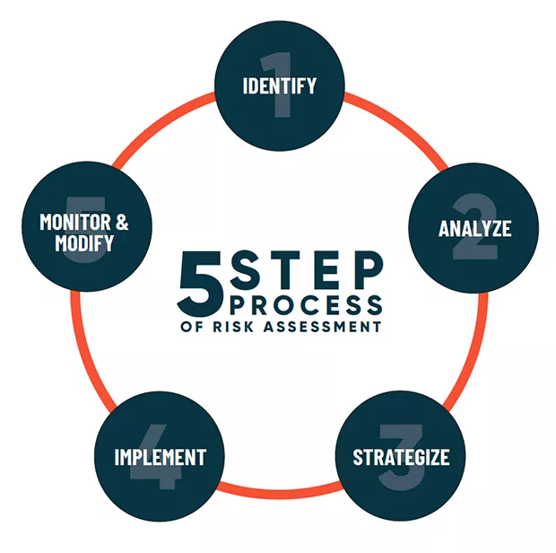

Expanded Nursing Uganda Explanation
General principles of managing disease should be studied as a medication-safety topic: indication, dose, route, timing, contraindications, expected effects, adverse effects, documentation and patient teaching all matter.
Contents, 13 sections (tap to expand)
01 Definition And Clinical Meaning
General principles of managing disease gives the foundation for recognizing disease patterns early, preventing avoidable complications and planning nursing care that fits the patient's condition and home situation.
In Certificate in Nursing - CN211: Medical Nursing (I) and Pharmacology (I), study general principles of managing disease by linking the disease process to the patient's symptoms, the nurse's observations, immediate comfort needs, medicines or procedures ordered, and prevention of complications.
02 Causes And Risk Factors
- Disease may result from infection, genetics, environment, nutrition, lifestyle, trauma, medicines or failure of body systems.
- Risk increases when poverty, stigma, delayed review, low health literacy or poor access to follow-up reduces timely care.
- Prevention requires individual teaching, family support, immunisation where relevant, hygiene, safe medicines and early referral.
03 Assessment And Key Findings
- Start with airway, breathing, circulation, disability and exposure before moving to focused history.
- Collect the main complaint, onset, duration, associated symptoms, medicines used and previous illness.
- Use vital signs and focused examination to decide urgency, nursing priorities and need for referral.
04 Nursing Management
- Prioritise airway, breathing, circulation, pain, hydration, nutrition, elimination, mobility, skin integrity and psychological support.
- Position the patient for comfort and safety, maintain privacy, reduce anxiety and involve the family where appropriate.
- Administer prescribed treatment safely, observe response and report deterioration early.
- Maintain infection-prevention measures, especially hand hygiene, safe waste handling, cough etiquette and appropriate isolation where indicated.
- Document assessment findings, interventions, patient response, education given and referral decisions clearly.
05 Medicines And Treatment Support
- Check allergies, pregnancy status where relevant, current medicines, vital signs and contraindications before giving ordered medicines.
- Explain the purpose of each medicine in simple language and observe for expected benefit and adverse effects.
- Encourage adherence, completion of prescribed courses and follow-up review, especially for chronic disease or infectious conditions.
- Escalate when symptoms worsen despite treatment, when side effects are severe, or when the patient cannot access essential medicines.
06 Patient Education And Prevention
- Teach the patient and family what general principles of managing disease means, the warning signs to report and the reason for follow-up.
- Use practical messages about hygiene, nutrition, safe medicines, rest, activity, fluid intake, avoidance of triggers and early review.
- Check understanding by asking the patient to repeat the plan in their own words.
- Adapt teaching to literacy level, language, culture, cost, distance from care and available family support.
07 Complications And Danger Signs
Complications depend on the disease but commonly include dehydration, sepsis, shock, disability, chronic organ damage or death when serious illness is missed.
- Seek urgent review for collapse, severe breathlessness, chest pain, confusion, convulsions, persistent high fever, uncontrolled bleeding, severe dehydration or rapidly worsening weakness.
- Refer early when the condition is beyond the facility's staffing, medicines, oxygen, laboratory or monitoring capacity.
08 Uganda Practice Notes
- Use available facility protocols and current Uganda Clinical Guidelines when deciding referral urgency, ordered investigations and treatment support.
- Consider affordability, transport, medicine availability, stigma and family roles when planning discharge teaching.
- For communicable diseases, combine bedside care with contact advice, prevention messages and public-health reporting where required.
- For chronic diseases, focus on long-term adherence, lifestyle support, appointment keeping and recognition of relapse or complications.
09 Study Wrap
- Revise general principles of managing disease by connecting the affected body system, causes, risk factors and early findings.
- Prioritize the first-hour nursing actions, monitoring needs and escalation points.
- Link patient teaching to prevention, home care, adherence and follow-up.
- Keep danger signs and referral triggers visible during ward review.
10 Nursing Uganda Clinical Lens
Use General principles of managing disease as a practical nursing topic, not only a memorized definition. Study medicines through indication, safety checks, expected response, adverse effects and patient teaching.
- What to understand first: define general principles of managing disease, identify the normal or expected pattern, then explain what changes when the patient is unwell.
- Why it matters in care: the nurse must recognize risk early, explain findings clearly, document accurately and know when to escalate.
- How to revise it: connect each point to assessment, nursing diagnosis or care problem, intervention, rationale and evaluation.
11 Assessment Guide
- Diagnosis or reason for the medicine, allergies, pregnancy status and previous reactions.
- Current medicines, herbal products, renal or liver risk and baseline observations.
- Dose, route, timing, dilution, expiry date and documentation requirements.
12 Nursing Priorities, Rationales and Outcomes
- Apply the rights of medication administration and facility policy.
- Monitor therapeutic response and class-specific adverse effects.
- Educate the patient on purpose, timing, missed doses, warning symptoms and adherence.
The rationale for these priorities is patient safety: nursing actions should prevent deterioration, reduce discomfort, support recovery and create clear evidence for the next caregiver.
- Expected outcome: The medicine produces the intended effect without preventable harm, and administration is accurately documented.
13 Patient Teaching and Revision Check
- Explain general principles of managing disease in simple language the patient or caregiver can repeat back.
- Teach warning signs, medicine or follow-up instructions, hygiene or lifestyle points where relevant.
- For exams, prepare a short answer using: definition, causes or risk factors, signs, assessment, management, complications and prevention.
- For ward practice, document baseline findings, actions taken, patient response and the plan for review.
Illustrations and Diagrams (5)


Related Video Lectures
Watch nursing lecture videos on YouTube for this topic. Opens in a new tab.
Watch on YouTubeExternal link: YouTube may use its own cookies and terms. Nursing Uganda is not affiliated with YouTube.